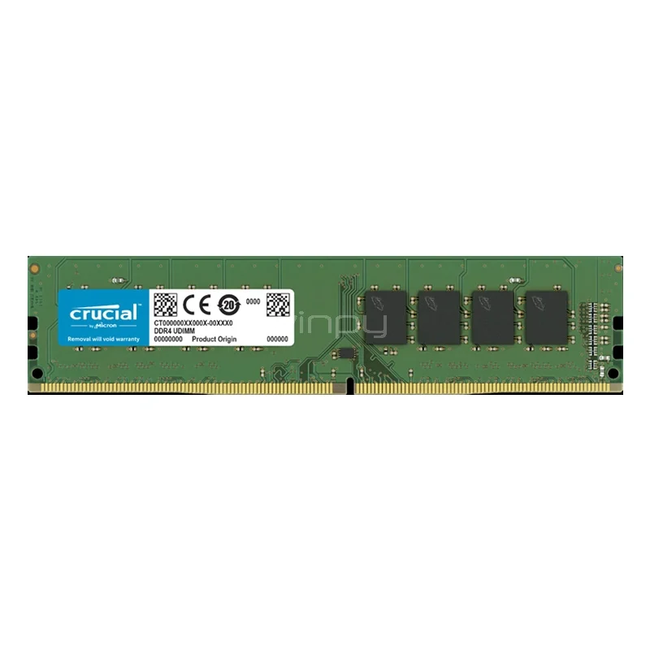

Ficha Técnica del Producto
Memoria RAM Crucial 16GB DDR4
- Código: RAM-CRU-16G
- Categoría: Componentes de Hardware
- Compatibilidad: Optimizada para procesadores Ryzen (Ej: Ryzen 3 3250U)
- Precio: $150.000
- Stock Disponible: 12 unidades
Descripción Adicional
Módulo de memoria RAM ideal para mejorar el rendimiento en multitarea y aplicaciones exigentes. Perfecta para potenciar notebooks y evitar cuellos de botella del sistema.
